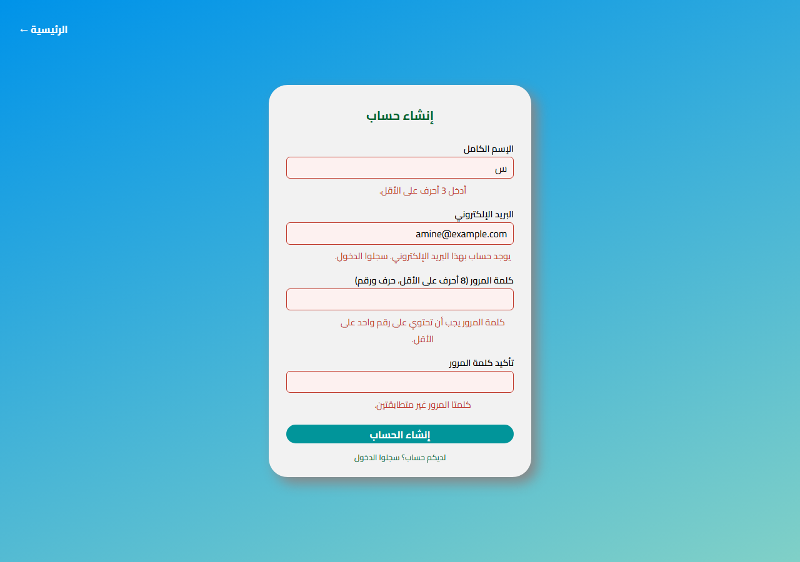
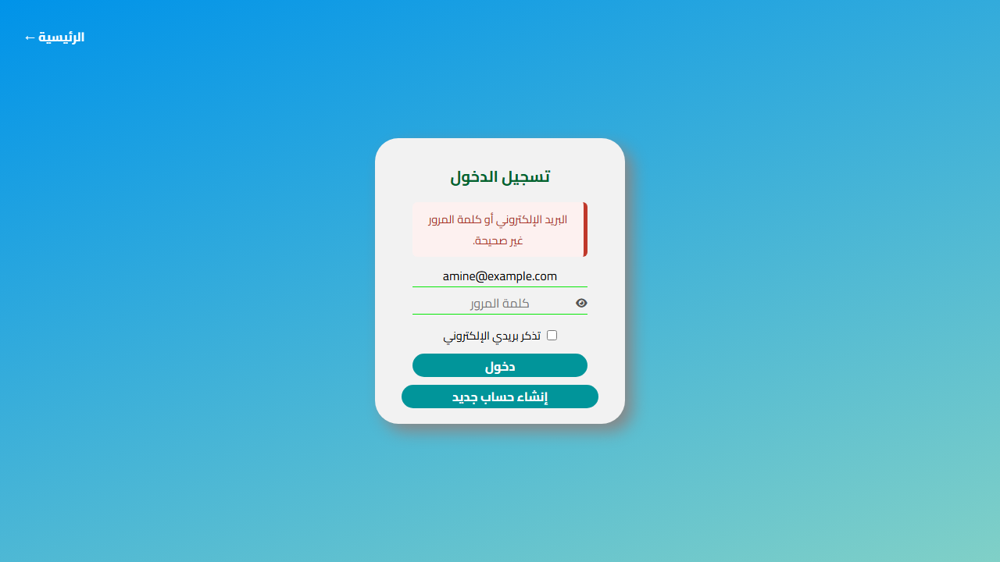
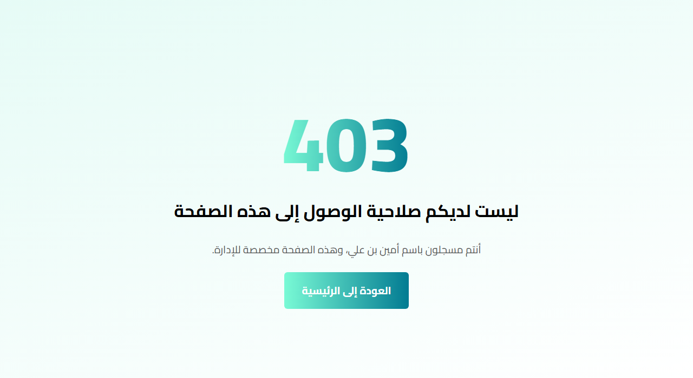
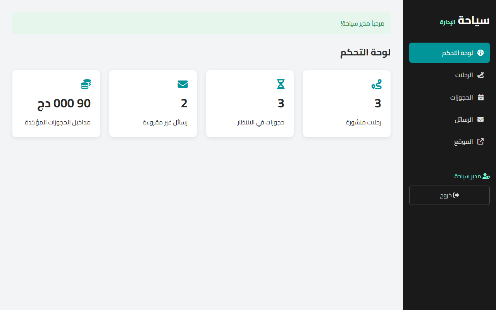
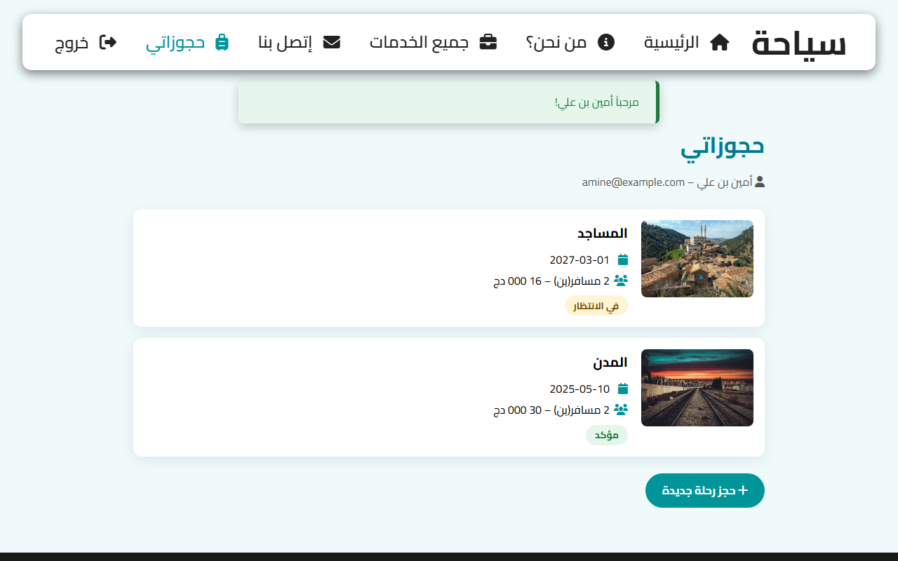

Lab 7: Sessions, cookies and authentication
Instructions
Until now Syaha did not know who its visitors were: the login page of Lab 2 sent nothing, and the admin area of Lab 5 was open to anyone who knew its address. In this lab you give the website a memory: sessions to recognise a visitor from one page to the next, accounts with hashed passwords, a real login and logout, pages reserved to logged-in users or to admins, messages that survive a redirect, and a cookie that remembers a preference. Then you add accounts and protected pages to your team project.
I. What this lab adds to the back end
| File | Change |
|---|---|
database/syaha.sql | table users, column bookings.user_id, two demo accounts |
includes/session.php | new: starts the session with safe settings, idle timeout |
includes/auth.php | new: current_user(), login_user(), logout_user(), require_login(), flash messages |
includes/forbidden.php | new: the 403 page |
login.php | a real login (it was a static form), "remember my e-mail" cookie |
register.php, logout.php, my_bookings.php | new: create an account, log out, the bookings of the customer |
includes/header.php | the menu depends on the visitor; flash messages |
admin/guard.php | new: included by every admin page: admins only |
book.php, contact_us.php, includes/booking_dialog.php | pre-filled for a logged-in user; bookings linked to the account |
admin/*.php | flash messages instead of ?status= in the URL |
SRC/Labs/Lab_7/database/syaha.sql again in phpMyAdmin (it re-creates the syaha database with the new table), then open http://localhost/<project folder>/SRC/Labs/Lab_7/index.php. Two accounts are ready:| Account | Password | Can | |
|---|---|---|---|
| Admin | admin@syaha.example | Syaha_Admin1 | open the admin area |
| Customer | amine@example.com | Syaha_2025 | see their bookings, book without typing their name |
II. Step 1: HTTP forgets, cookies and sessions remember
HTTP is stateless: each request is independent, and nothing in it says that the visitor who opens services.php is the one who logged in a second ago. The solution is a small "ticket" that the server gives to the browser and that the browser shows with every request: a cookie.
GET /SRC/Labs/Lab_7/my_bookings.php HTTP/1.1 <- who is asking? HTTP does not say
Host: localhost
HTTP/1.1 200 OK
Set-Cookie: SYAHA_SESSION=k3j9f0a1...; path=/; HttpOnly; SameSite=Lax <- the server gives a "ticket"
GET /SRC/Labs/Lab_7/services.php HTTP/1.1
Host: localhost
Cookie: SYAHA_SESSION=k3j9f0a1... <- the browser shows it every time
| Cookie | Session | |
|---|---|---|
| Where is the data? | in the browser of the visitor | on the server (a file in C:\xampp\tmp) |
| Who can read and change it? | the visitor: developer tools, extensions, JavaScript (without HttpOnly) | only your PHP code |
| Size | about 4 KB per cookie | no practical limit |
| Lifetime | chosen by expires | until logout, timeout, or the browser is closed |
| In PHP | setcookie() / $_COOKIE | session_start() / $_SESSION |
| In Syaha | the e-mail to pre-fill (a preference) | who is logged in, the role, flash messages, failed logins |
A session uses a cookie too, but this cookie only contains a long random id; the data stays on the server, in a file named after this id:
; C:\xampp\tmp\sess_k3j9f0a1... : the data of ONE visitor, on the server
user|a:4:{s:2:"id";i:2;s:9:"full_name";s:21:"أمين بن علي";s:5:"email";s:17:"amine@example.com";s:4:"role";s:8:"customer";}
last_activity|i:1760000000;
<?php
session_start(); // BEFORE any HTML: it may send the Set-Cookie header
$_SESSION['visits'] = ($_SESSION['visits'] ?? 0) + 1; // written on the server, kept between requests
echo 'Visits: ' . $_SESSION['visits'];
unset($_SESSION['visits']); // remove one value
$_SESSION = []; // remove everything (the session itself still exists)
session_destroy(); // delete the file of the session on the server
session_start() and setcookie() send HTTP headers, and headers are sent before the first character of HTML. Called too late (even after a space before <?php), they fail:
Warning: session_start(): Session cannot be started after headers have already been sent
Warning: Cannot modify header information - headers already sent by (output started at index.php:1)
SYAHA_SESSION, log in, and see its value change.III. Step 2: start the session safely
Every page of Syaha needs the session (the menu shows the name of the user), so it is started in one file, included by auth.php:
includes/session.php
<?php
// Starts the session of the visitor, with safe settings (Lab 7).
// Included at the top of every page, BEFORE any HTML: session_start() sends a cookie, that is an HTTP header.
const SESSION_IDLE_MINUTES = 30; // a logged-in visitor who does nothing for 30 minutes is logged out
if (session_status() === PHP_SESSION_NONE) {
// refuse a session id that this server did not create (protection against session fixation)
ini_set('session.use_strict_mode', '1');
session_name('SYAHA_SESSION');
session_set_cookie_params([
'lifetime' => 0, // the cookie disappears when the browser is closed
'path' => '/',
'httponly' => true, // JavaScript cannot read it (an XSS cannot steal it)
'samesite' => 'Lax', // not sent with forms posted by other websites
'secure' => !empty($_SERVER['HTTPS']), // over HTTPS only, when the site uses HTTPS
]);
session_start();
}
// idle timeout: a session unused for too long is emptied
if (isset($_SESSION['user'], $_SESSION['last_activity'])
&& time() - $_SESSION['last_activity'] > SESSION_IDLE_MINUTES * 60) {
$_SESSION = [];
session_regenerate_id(true);
$_SESSION['flash'][] = ['Error', 'انتهت الجلسة بعد ' . SESSION_IDLE_MINUTES . ' دقيقة من عدم النشاط. سجلوا الدخول من جديد.'];
}
$_SESSION['last_activity'] = time();
session_name(): a name of our own instead ofPHPSESSID, which tells everyone that the site uses PHP.use_strict_mode: PHP refuses a session id that it did not create. Without it an attacker can choose an id, make the victim use it (session fixation), and share the session after the login.- The options of the cookie:
HttpOnlykeeps it away from JavaScript, so an XSS cannot steal it;SameSite=Laxstops the browser from sending it with a form posted by another website (a first protection against CSRF, see Lab 10);Securekeeps it on HTTPS. - Idle timeout: a session left open on a shared computer is closed after 30 minutes without activity. The time of the last request is kept in the session itself.
session_status(): the file can be included twice without starting the session twice.
All the functions about users are in includes/auth.php, which every page includes after functions.php and queries.php:
index.php (extract)
<?php
require __DIR__ . '/includes/functions.php';
require __DIR__ . '/includes/queries.php';
require __DIR__ . '/includes/auth.php';
// 1. read the data
$destinations = get_destinations();
IV. Step 3: accounts and hashed passwords
A new table keeps the accounts. A booking can now belong to an account; it stays possible to book without one (user_id is NULL).
database/syaha.sql (extract)
-- the accounts (Lab 7): the password is never stored, only its hash (password_hash)
CREATE TABLE users (
id INT UNSIGNED AUTO_INCREMENT PRIMARY KEY,
full_name VARCHAR(100) NOT NULL,
email VARCHAR(255) NOT NULL UNIQUE, -- UNIQUE: two accounts cannot share an e-mail
password_hash VARCHAR(255) NOT NULL, -- 60 characters today, 255 leaves room for future algorithms
role ENUM('customer', 'admin') NOT NULL DEFAULT 'customer',
created_at TIMESTAMP NOT NULL DEFAULT CURRENT_TIMESTAMP
) ENGINE=InnoDB;
-- one booking = one trip (many bookings can concern the same trip: one-to-many relationship)
CREATE TABLE bookings (
id INT UNSIGNED AUTO_INCREMENT PRIMARY KEY,
trip_id INT UNSIGNED NOT NULL,
user_id INT UNSIGNED NULL, -- the account that booked (NULL: booked without an account)
full_name VARCHAR(100) NOT NULL,
email VARCHAR(255) NOT NULL,
departure_date DATE NOT NULL,
people TINYINT UNSIGNED NOT NULL,
total_price INT UNSIGNED NOT NULL, -- computed by the server, never taken from the browser
status ENUM('pending', 'confirmed', 'cancelled') NOT NULL DEFAULT 'pending',
created_at TIMESTAMP NOT NULL DEFAULT CURRENT_TIMESTAMP,
CONSTRAINT fk_bookings_trip FOREIGN KEY (trip_id) REFERENCES trips (id)
ON DELETE RESTRICT ON UPDATE CASCADE, -- a trip that has bookings cannot be deleted
CONSTRAINT fk_bookings_user FOREIGN KEY (user_id) REFERENCES users (id)
ON DELETE SET NULL -- an account deleted: its bookings stay, without account
) ENGINE=InnoDB;
The password itself is never stored: if the database leaks (a backup, an SQL injection, a stolen laptop), the attackers must not be able to log in as your users, nor try their passwords on other websites. The database keeps a hash: a one-way fingerprint, from which the password cannot be computed back.
<?php
$hash = password_hash('Syaha_2025', PASSWORD_DEFAULT);
echo $hash; // $2y$10$fCbx4JzpwZd1NVO6sr.kCuALpXIS7xO1t2bkSKBqYXmwgmXAb0ejm
// | | | |
// | | salt (random) hash
// | cost: 2^10 rounds (slow on purpose)
// algorithm: bcrypt
password_hash('Syaha_2025', PASSWORD_DEFAULT); // another salt: another hash, every time
password_verify('Syaha_2025', $hash); // true
password_verify('syaha_2025', $hash); // false
md5('Syaha_2025'); // NEVER for passwords: fast, no salt, found in seconds with tables
sha1('Syaha_2025'); // NEVER either
password_hash()adds a random salt: two users with the same password get different hashes, and precomputed tables are useless.- It is slow on purpose (the cost): trying millions of passwords takes years instead of minutes.
- The hash contains its algorithm, its cost and its salt:
password_verify()needs nothing else. Store it in aVARCHAR(255): future algorithms make longer hashes.
includes/queries.php (extract)
// ------------------------------------------------------------------ users (Lab 7)
/** The account of an e-mail address, or null. */
function find_user_by_email(string $email): ?array
{
$statement = db()->prepare('SELECT * FROM users WHERE email = ?');
$statement->execute([$email]);
return $statement->fetch() ?: null;
}
/** Creates a customer account and returns its id. The password is hashed here, never stored as such. */
function create_user(string $full_name, string $email, string $password): int
{
$statement = db()->prepare('INSERT INTO users (full_name, email, password_hash) VALUES (?, ?, ?)');
$statement->execute([$full_name, $email, password_hash($password, PASSWORD_DEFAULT)]);
return (int) db()->lastInsertId();
}
/** Replaces the hash of a password (when PHP recommends a stronger algorithm, see password_needs_rehash). */
function update_password_hash(int $user_id, string $password): void
{
db()->prepare('UPDATE users SET password_hash = ? WHERE id = ?')
->execute([password_hash($password, PASSWORD_DEFAULT), $user_id]);
}
The registration page

register.php
<?php
// Registration of a customer account (Lab 7).
require __DIR__ . '/includes/functions.php';
require __DIR__ . '/includes/queries.php';
require __DIR__ . '/includes/auth.php';
require __DIR__ . '/includes/validation.php';
if (current_user() !== null) {
redirect('my_bookings.php');
}
$rules = [
'name' => ['required', 'min:3', 'max:100'],
'email' => ['required', 'email', 'max:255'],
'password' => ['required', 'min:8', 'max:72'], // bcrypt only uses the first 72 bytes
'confirm' => ['required'],
];
$values = array_fill_keys(array_keys($rules), '');
$errors = [];
if ($_SERVER['REQUEST_METHOD'] === 'POST') {
foreach (['name', 'email'] as $field) {
$values[$field] = input($field);
}
// a password is never trimmed: its spaces are part of it
$values['password'] = is_string($_POST['password'] ?? null) ? $_POST['password'] : '';
$values['confirm'] = is_string($_POST['confirm'] ?? null) ? $_POST['confirm'] : '';
$errors = validate($values, $rules);
if (!isset($errors['password']) && !preg_match('/[A-Za-z]/', $values['password'])) {
$errors['password'] = 'كلمة المرور يجب أن تحتوي على حرف واحد على الأقل.';
} elseif (!isset($errors['password']) && !preg_match('/[0-9]/', $values['password'])) {
$errors['password'] = 'كلمة المرور يجب أن تحتوي على رقم واحد على الأقل.';
}
if (!isset($errors['confirm']) && $values['confirm'] !== $values['password']) {
$errors['confirm'] = 'كلمتا المرور غير متطابقتين.';
}
if (!isset($errors['email']) && find_user_by_email($values['email']) !== null) {
$errors['email'] = 'يوجد حساب بهذا البريد الإلكتروني. سجلوا الدخول.';
}
if (!$errors) {
$id = create_user($values['name'], $values['email'], $values['password']);
login_user(['id' => $id, 'full_name' => $values['name'], 'email' => $values['email'], 'role' => 'customer']);
flash('Success', 'تم إنشاء حسابكم. مرحباً ' . $values['name'] . '!');
redirect('my_bookings.php');
}
http_response_code(422);
// the password fields are never sent back to the browser
$values['password'] = $values['confirm'] = '';
}
?>
<!DOCTYPE html>
<html lang="ar">
<head>
<meta charset="UTF-8">
<meta name="viewport" content="width=device-width, initial-scale=1.0">
<link rel="stylesheet" href="../Lab_2/Lab_2_Page.css">
<link rel="stylesheet" href="../Lab_2/Logins.css">
<link rel="stylesheet" href="../Lab_3/Logins_Responsive.css">
<link rel="preconnect" href="https://fonts.googleapis.com">
<link rel="preconnect" href="https://fonts.gstatic.com" crossorigin>
<link rel="stylesheet" href="https://fonts.googleapis.com/css2?family=Cairo:wght@400;600;700;800&display=swap">
<link rel="stylesheet" href="https://cdnjs.cloudflare.com/ajax/libs/font-awesome/6.4.2/css/all.min.css"
integrity="sha512-z3gLpd7yknf1YoNbCzqRKc4qyor8gaKU1qmn+CShxbuBusANI9QpRohGBreCFkKxLhei6S9CQXFEbbKuqLg0DA=="
crossorigin="anonymous" referrerpolicy="no-referrer" />
<link rel="stylesheet" href="backend.css">
<title>سياحة | إنشاء حساب</title>
</head>
<body>
<section class="Logins">
<a href="index.php" class="Back_Home">← الرئيسية</a>
<div class="Account_Login Register">
<form class="Register_Form" action="register.php" method="post" dir="rtl">
<h1>إنشاء حساب</h1>
<label for="Name">الإسم الكامل</label>
<input type="text" id="Name" name="name" value="<?= e($values['name']) ?>" autocomplete="name"
required<?= invalid_attributes($errors, 'name', 'Name') ?> />
<?= field_error($errors, 'name', 'Name') ?>
<label for="Email">البريد الإلكتروني</label>
<input type="email" id="Email" name="email" value="<?= e($values['email']) ?>" autocomplete="email"
required<?= invalid_attributes($errors, 'email', 'Email') ?> />
<?= field_error($errors, 'email', 'Email') ?>
<label for="Password">كلمة المرور (8 أحرف على الأقل، حرف ورقم)</label>
<input type="password" id="Password" name="password" autocomplete="new-password" minlength="8"
required<?= invalid_attributes($errors, 'password', 'Password') ?> />
<?= field_error($errors, 'password', 'Password') ?>
<label for="Confirm">تأكيد كلمة المرور</label>
<input type="password" id="Confirm" name="confirm" autocomplete="new-password"
required<?= invalid_attributes($errors, 'confirm', 'Confirm') ?> />
<?= field_error($errors, 'confirm', 'Confirm') ?>
<button type="submit" class="LoginBtn">إنشاء الحساب</button>
</form>
<a href="login.php" class="Forgot_Password">لديكم حساب؟ سجلوا الدخول</a>
</div>
</section>
</body>
</html>
- The validation of Lab 6 is reused, with two rules of its own: a letter and a digit, and the confirmation must match.
- A password is never trimmed (its spaces are part of it) and never sent back to the browser: the password fields are empty when the form is shown again.
max:72: bcrypt ignores what comes after 72 bytes.- The
UNIQUEindex is the real guarantee that two accounts cannot share an e-mail; the check in PHP only gives a nice message. - After the registration, the visitor is logged in directly.
V. Step 4: log in and log out

login.php (extract)
<?php
// Login (Lab 7): checks the e-mail and the password, then stores the user in the session.
require __DIR__ . '/includes/functions.php';
require __DIR__ . '/includes/queries.php';
require __DIR__ . '/includes/auth.php';
require __DIR__ . '/includes/validation.php';
const REMEMBER_COOKIE = 'syaha_email'; // a harmless preference: the e-mail typed last time
const REMEMBER_DAYS = 30;
// already logged in: nothing to do here
if (current_user() !== null) {
redirect(is_admin() ? 'admin/index.php' : 'my_bookings.php');
}
$next = input('next', $_SERVER['REQUEST_METHOD'] === 'POST' ? 'post' : 'get');
$values = ['email' => $_COOKIE[REMEMBER_COOKIE] ?? '', 'password' => ''];
$remember = isset($_COOKIE[REMEMBER_COOKIE]);
$errors = [];
$error = '';
if ($_SERVER['REQUEST_METHOD'] === 'POST') {
$values = ['email' => input('email'), 'password' => $_POST['password'] ?? ''];
$remember = isset($_POST['remember']);
$errors = validate($values, ['email' => ['required', 'email'], 'password' => ['required']]);
if (login_wait() > 0) {
$error = 'محاولات كثيرة. أعيدوا المحاولة بعد ' . login_wait() . ' ثانية.';
} elseif (!$errors) {
$user = find_user_by_email($values['email']);
// the same message whether the e-mail or the password is wrong: do not tell which accounts exist
if ($user === null || !password_verify($values['password'], $user['password_hash'])) {
login_failed();
$error = 'البريد الإلكتروني أو كلمة المرور غير صحيحة.';
} else {
// PHP may recommend a stronger algorithm than the one used for this hash: update it now
if (password_needs_rehash($user['password_hash'], PASSWORD_DEFAULT)) {
update_password_hash((int) $user['id'], $values['password']);
}
login_user($user);
// "remember my e-mail": a cookie with the e-mail only (never the password, never the role)
setcookie(REMEMBER_COOKIE, $remember ? $values['email'] : '', [
'expires' => $remember ? time() + REMEMBER_DAYS * 24 * 3600 : time() - 3600,
'path' => '/',
'httponly' => true,
'samesite' => 'Lax',
'secure' => !empty($_SERVER['HTTPS']),
]);
flash('Success', 'مرحباً ' . $user['full_name'] . '!');
redirect(safe_next($next, is_admin() ? 'admin/index.php' : 'my_bookings.php'));
}
}
http_response_code($error !== '' || $errors ? 422 : 200);
}
$flashes = take_flashes();
- The account is found by its e-mail, then
password_verify()compares the password with the hash. - One message for both mistakes: "wrong e-mail" and "wrong password" would tell an attacker which e-mails have an account.
password_needs_rehash(): when PHP adopts a stronger algorithm or cost, the hash of the user is updated at their next login, the only moment the password is known.- Too many attempts: after 5 wrong passwords, the form waits one minute. The counter is in the session; a real website also counts per account and per IP address in the database, because an attacker can simply drop the cookie.
- The visitor goes back to the page they wanted (
next), or to their own page.
includes/auth.php (extract)
/** Stores the user in the session after a successful login or registration. */
function login_user(array $user): void
{
// a new session id: an id known before the login (given by an attacker) becomes useless
session_regenerate_id(true);
$_SESSION['user'] = [
'id' => (int) $user['id'],
'full_name' => $user['full_name'],
'email' => $user['email'],
'role' => $user['role'],
];
unset($_SESSION['login_failures'], $_SESSION['login_locked_until']);
}
/** Destroys the session: data on the server and cookie in the browser. */
function logout_user(): void
{
$_SESSION = [];
$cookie = session_get_cookie_params();
setcookie(session_name(), '', [
'expires' => time() - 3600, // a date in the past deletes the cookie
'path' => $cookie['path'],
'httponly' => $cookie['httponly'],
'samesite' => $cookie['samesite'],
'secure' => $cookie['secure'],
]);
session_destroy();
session_start(); // a new, empty session for the flash message
session_regenerate_id(true);
}
session_regenerate_id(true)gives the session a new id at the login and deletes the old one: an id known before the login (fixation, an id seen on a shared computer) becomes useless. Always do it when the privileges change.- Only what the pages need is copied in the session: never the hash of the password.
- Logging out empties
$_SESSION, deletes the file on the server (session_destroy()) and the cookie in the browser.
logout.php
<?php
// Logout (Lab 7). POST only: a link (GET) could be triggered by an image or a page of another website.
require __DIR__ . '/includes/functions.php';
require __DIR__ . '/includes/auth.php';
require_post('index.php');
logout_user();
flash('Success', 'تم تسجيل الخروج.');
redirect('index.php');
Logging out changes the state of the session, so it is a POST form, not a link: an <img src="logout.php"> on another website would otherwise log your visitors out. The menu shows a button that looks like the other links:
includes/header.php (extract)
<?php if ($user !== null): ?>
<li>
<!-- logging out changes the session: a POST form, not a link -->
<form action="logout.php" method="post" class="Logout_Form">
<button type="submit" class="Nav_Bar_Menu_Item" title="<?= e($user['full_name']) ?>">
<span>خروج</span>
<i class="fa-solid fa-right-from-bracket"></i>
</button>
</form>
</li>
<?php endif; ?>
Login_Form.js of Lab 4 still checks the fields in the browser; when the form has an action (Lab 7), it now sends it once the fields are valid:
Login_Form.js (extract)
// with a back end (Lab 7), the form has an action: send it; the server checks the password
if (Form.getAttribute("action")) {
Form.submit();
return;
}
VI. Step 5: protect pages and check the role
Two questions protect a page: is the visitor authenticated (who are you?) and are they authorised (are you allowed?). require_login() answers both, before the page reads or changes anything:
includes/auth.php (extract)
// ------------------------------------------------------------------ protected pages
/**
* Stops the page if the visitor is not logged in (or does not have the role).
* $login is the URL of login.php seen from the page ("../login.php" from the admin folder).
*/
function require_login(?string $role = null, string $login = 'login.php'): void
{
$user = current_user();
if ($user === null) {
flash('Error', 'سجلوا الدخول للوصول إلى هذه الصفحة.');
redirect($login . '?next=' . urlencode($_SERVER['REQUEST_URI']));
}
if ($role !== null && $user['role'] !== $role) {
// logged in, but not allowed: 403 Forbidden
http_response_code(403);
$base = dirname($login) === '.' ? '' : dirname($login) . '/'; // '../' from the admin folder
require __DIR__ . '/forbidden.php';
exit;
}
}
/**
* The address to go to after the login: only a page of this website.
* "next" comes from the URL: an attacker could put https://evil.example in it.
*/
function safe_next(string $next, string $default): string
{
$path = parse_url($next, PHP_URL_PATH) ?? '';
$dir = dirname($_SERVER['SCRIPT_NAME']); // the folder of Lab_7, e.g. /SRC/Labs/Lab_7
if (str_starts_with($next, $dir . '/') && !str_contains($next, '..') && !str_contains($next, '//')
&& preg_match('#\.php$#', $path)) {
return $next;
}
return $default;
}
| Visitor | Answer | Why |
|---|---|---|
| not logged in | 302 to login.php?next=... | they may have an account: let them log in, then come back |
| logged in, wrong role | 403 Forbidden | logging in again will not help |
| logged in, right role | the page |

safe_next() prevents an open redirect: without it, login.php?next=https://evil.example sent by e-mail would show the real login page of Syaha, then send the victim to a copy of it.
The admin area
Every page of the admin area starts with one line, before any query:
admin/guard.php
<?php
// Included at the very top of EVERY page of the admin area (Lab 7), before anything is read or changed:
// a visitor who is not logged in as an admin never reaches the code of the page.
require_once __DIR__ . '/../includes/auth.php';
require_login('admin', '../login.php');
admin/trips.php (extract)
<?php
require __DIR__ . '/../includes/functions.php';
require __DIR__ . '/../includes/queries.php';
require __DIR__ . '/guard.php'; // admins only (Lab 7)
$trips = get_trips(false); // also the unpublished ones
trip_delete.php): guard.php is included by all of them.
admin/header.php (extract)
<div class="Admin_User">
<i class="fa-solid fa-user-shield"></i> <?= e($admin['full_name']) ?>
<form action="../logout.php" method="post">
<button type="submit"><i class="fa-solid fa-right-from-bracket"></i> خروج</button>
</form>
</div>
</aside>
<main class="Admin_Main">
<?php foreach (take_flashes() as [$type, $message]): ?>
<p class="Flash Flash_<?= e($type) ?>"><?= e($message) ?></p>
<?php endforeach; ?>
VII. Step 6: a website that knows its visitor
The header builds its menu from the session: "login" for a visitor, "my bookings" for a customer, "admin" for an admin.
includes/header.php (extract)
$user = current_user();
// the first item depends on the visitor (Lab 7): login, or their own page
$menu = $user === null
? ['login' => ['login.php', 'تسجيل الدخول', 'fa-solid fa-right-to-bracket']]
: ['account' => is_admin()
? ['admin/index.php', 'الإدارة', 'fa-solid fa-gauge']
: ['my_bookings.php', 'حجوزاتي', 'fa-solid fa-suitcase-rolling']];
$menu += [
'contact' => ['contact_us.php', 'إتصل بنا', 'fa-solid fa-envelope'],
'services' => ['services.php', 'جميع الخدمات', 'fa-solid fa-briefcase'],
'about' => ['about_us.php', 'من نحن؟', 'fa-solid fa-circle-info'],
'home' => ['index.php', 'الرئيسية', 'fa-solid fa-house'],
];

my_bookings.php
<?php
// The bookings of the logged-in customer (Lab 7): a page that only exists for a logged-in visitor.
require __DIR__ . '/includes/functions.php';
require __DIR__ . '/includes/queries.php';
require __DIR__ . '/includes/auth.php';
require_login();
$user = current_user();
// the id comes from the session, never from the URL: a visitor cannot see the bookings of someone else
$bookings = get_user_bookings($user['id']);
$statuses = ['pending' => 'في الانتظار', 'confirmed' => 'مؤكد', 'cancelled' => 'ملغى'];
$page_title = 'سياحة | حجوزاتي';
$active = 'account';
$styles = [];
$responsive = [];
$scripts = [];
require __DIR__ . '/includes/header.php';
?>
<main class="Account_Page">
<section class="Account">
<h1>حجوزاتي</h1>
<p class="Account_Who">
<i class="fa-solid fa-user"></i> <?= e($user['full_name']) ?> – <?= e($user['email']) ?>
</p>
<?php if (!$bookings): ?>
<p class="Flash Flash_Info">لا توجد حجوزات بعد. <a href="services.php#Trips">اكتشفوا رحلاتنا</a>.</p>
<?php else: ?>
<div class="Account_Bookings">
<?php foreach ($bookings as $booking): ?>
<article class="Account_Booking">
<img src="<?= e(image_url($booking['trip_image'])) ?>" alt="<?= e($booking['trip_title']) ?>" />
<div>
<h2><?= e($booking['trip_title']) ?></h2>
<p><i class="fa-solid fa-calendar"></i> <?= e($booking['departure_date']) ?></p>
<p><i class="fa-solid fa-users"></i> <?= (int) $booking['people'] ?> مسافر(ين) – <?= money((int) $booking['total_price']) ?></p>
<span class="Status Status_<?= e($booking['status']) ?>"><?= e($statuses[$booking['status']] ?? $booking['status']) ?></span>
</div>
</article>
<?php endforeach; ?>
</div>
<?php endif; ?>
<p><a href="services.php#Trips" class="Account_Link"><i class="fa-solid fa-plus"></i> حجز رحلة جديدة</a></p>
</section>
</main>
<?php require __DIR__ . '/includes/footer.php'; ?>
my_bookings.php?user=2, a visitor would only have to change the number to read the bookings of someone else (an IDOR: insecure direct object reference).includes/queries.php (extract)
/** The bookings of one account, with the title of their trip, most recent first (Lab 7). */
function get_user_bookings(int $user_id): array
{
$statement = db()->prepare(
'SELECT bookings.*, trips.title AS trip_title, trips.image AS trip_image
FROM bookings
JOIN trips ON trips.id = bookings.trip_id
WHERE bookings.user_id = ?
ORDER BY bookings.departure_date DESC'
);
$statement->execute([$user_id]);
return $statement->fetchAll();
}
The forms are pre-filled with the name and e-mail of the account, and a booking is linked to it:
book.php (extract)
$values = array_fill_keys(array_keys($rules), '');
$values['trip_id'] = input('trip', 'get');
// a logged-in customer does not type their name and e-mail again (Lab 7)
$values['name'] = current_user()['full_name'] ?? '';
$values['email'] = current_user()['email'] ?? '';
$values['people'] = '1';
book.php (extract)
'user_id' => current_user()['id'] ?? null, // the booking belongs to the account (Lab 7)
]);
if ($id !== null) {
flash('Success', 'تم تسجيل حجزكم رقم ' . $id . ' بنجاح. سنتصل بكم لتأكيده.');
redirect(current_user() !== null ? 'my_bookings.php' : $return . '#Trips');
VIII. Step 7: flash messages
After a form, the page redirects (Post/Redirect/Get, Lab 6), so the message "thank you" must survive the redirect. Until now it travelled in the URL; with a session it can wait on the server until the next page shows it, once:
// Labs 5 and 6: the message travels in the URL
redirect('contact_us.php?sent=1'); // anyone can open contact_us.php?sent=1
if (isset($_GET['sent'])) { echo 'Thank you!'; }
// Lab 7: the message travels in the session, and is shown once
flash('Success', 'Thank you!'); // stored in $_SESSION['flash']
redirect('contact_us.php');
// ... header.php of the next page: foreach (take_flashes() as [$type, $message]) ...
includes/auth.php (extract)
// ------------------------------------------------------------------ flash messages
/** A message kept in the session until the next page displays it (after a redirect). */
function flash(string $type, string $message): void
{
$_SESSION['flash'][] = [$type, $message];
}
/** The messages waiting, which are removed from the session: they are shown only once. */
function take_flashes(): array
{
$messages = $_SESSION['flash'] ?? [];
unset($_SESSION['flash']);
return $messages;
}
includes/header.php (extract)
<?php $flashes = take_flashes(); ?>
<?php if ($flashes): ?>
<!-- messages kept in the session by the previous page (Lab 7) -->
<div class="Flash_Stack" role="status">
<?php foreach ($flashes as [$type, $message]): ?>
<p class="Flash Flash_<?= e($type) ?>"><?= e($message) ?></p>
<?php endforeach; ?>
</div>
<?php endif; ?>
- Reloading the page or bookmarking it does not show the message again.
- Nobody can make Syaha display a message by crafting a URL.
- The messages are escaped with
e(): they may contain the name typed by a visitor.
IX. Step 8: a cookie to remember a preference
The checkbox "remember my e-mail" of the login page writes a cookie for 30 days; the next time, the field is pre-filled (see the end of Step 4).
<?php
// write: sent to the browser in a Set-Cookie header (so before any HTML, like session_start)
setcookie('theme', 'dark', [
'expires' => time() + 30 * 24 * 3600, // 30 days; 0 = until the browser is closed
'path' => '/', // sent with every page of the site
'httponly' => true, // invisible to JavaScript (document.cookie)
'samesite' => 'Lax', // not sent with forms posted by other websites
'secure' => true, // HTTPS only
]);
// read: on the NEXT requests only, and as text typed by the visitor
$theme = $_COOKIE['theme'] ?? 'light';
if (!in_array($theme, ['light', 'dark'], true)) {
$theme = 'light'; // a cookie can be edited in the developer tools
}
// delete: the same cookie with a date in the past
setcookie('theme', '', ['expires' => time() - 3600, 'path' => '/']);
$_COOKIEis filled with the cookies sent by the browser: a cookie written bysetcookie()appears there on the next request only.- A cookie is an input like
$_POST: the visitor can change it. Validate it and escape it (e($values['email'])inlogin.php). - A cookie is deleted by writing it again with a date in the past, with the same
path.
What a cookie must never contain:
// NEVER: the visitor edits the cookie in the developer tools and becomes admin
setcookie('role', 'customer');
if ($_COOKIE['role'] === 'admin') { ... }
// NEVER: anyone who sees the cookie (shared computer, XSS, backup...) has the password
setcookie('password', $_POST['password']);
// RIGHT: the cookie only carries a random id; the role stays on the server, in $_SESSION
$_SESSION['user'] = ['id' => 2, 'role' => 'customer'];
X. Step 9: test it like an attacker
Use the developer tools and curl, which keeps cookies in a file:
# 1. log in with curl and keep the cookies in a file
curl -i -c jar.txt -d "email=amine@example.com" -d "password=Syaha_2025" \
http://localhost/<project folder>/SRC/Labs/Lab_7/login.php
# -> 302 Found, Location: my_bookings.php, Set-Cookie: SYAHA_SESSION=...
# 2. reuse the session: a logged-in page
curl -i -b jar.txt http://localhost/<project folder>/SRC/Labs/Lab_7/my_bookings.php # 200
# 3. a customer in the admin area
curl -i -b jar.txt http://localhost/<project folder>/SRC/Labs/Lab_7/admin/index.php # 403 Forbidden
# 4. logout with a link (GET) is refused: only the form (POST) logs out
curl -i -b jar.txt http://localhost/<project folder>/SRC/Labs/Lab_7/logout.php # 302, still logged in
| Test | How | Expected |
|---|---|---|
| Protected page | open my_bookings.php and admin/trips.php without logging in | the login page, then back to the page |
| Wrong role | log in as the customer, open admin/index.php | 403 |
| Hidden page | as the customer, send the form of admin/trip_delete.php with curl | 403, nothing deleted |
| New id at login | note the value of SYAHA_SESSION, log in | the value changed |
| Logout | log out, then press the Back button and reload | the login page |
| Cookie stolen by JavaScript | type document.cookie in the console | SYAHA_SESSION is not listed (HttpOnly) |
| Cookie edited | change syaha_email to <b>x | shown as text |
| Brute force | 6 wrong passwords | the form waits one minute |
| Accounts enumeration | a wrong e-mail, then a wrong password | the same message |
| Open redirect | login.php?next=https://example.com/x.php | stays on Syaha |
| Database | look at the table users in phpMyAdmin | only hashes, starting with $2y$ |
XI. Your turn
- A
userstable (unique e-mail,password_hashin aVARCHAR(255), a role if your project has an admin part), and the pages to register, log in and log out (POST). - One file that starts the session with safe settings, included by every page before any HTML.
- Regenerate the session id at login; store only what the pages need; destroy everything at logout.
- Protect every private page with a function like
require_login(), with the role when needed. Take the id of the user from the session, never from the URL. - Replace the messages in the URL by flash messages.
- Add one cookie for a harmless preference (language, theme, last search...), validated when it is read.
- Run the tests of Section X.
Deliverables
- Users can register, log in and log out; passwords are stored with
password_hash()only. - The session cookie is HttpOnly and SameSite, and its id changes at login.
- Every private page checks the login (and the role) on the server, before doing anything.
- Messages after a redirect are flash messages; the logout is a POST form.
- Cookies only hold harmless preferences, and are validated when they are read.
- This lab counts toward the "PHP/AJAX" milestone of the Deadlines table.